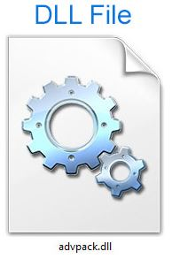

Programové a datové soubory
Soubor je množina souvisejících dat uložených na diskové jednotce. Název souboru je obvykle tvořen jménem a příponou, která naznačuje typ souboru. K dalším vlastnostem souboru patří jeho velikost, autor, datum vytvoření, datum změny, atributy, přístupová práva apod.
K přehlednější práci se soubory slouží systém adresářů či složek. Adresáře tvoří na disku typicky hierarchickou strukturu; základem je tzv. kořenový adresář označený symbolem „/“ ( Unix, Linux), nebo „\“ ( Windows). Každý adresář může obsahovat soubory i podadresáře.

Cesta vyjadřuje umístění souboru vždy směrem od nejvyššího adresáře: C:\XAMPP\mysql\bin\mysql.exe. Pro operace se soubory využíváme někdy zástupové znaky:
- Symbol * nahrazuje v názvu libovolný počet znaků (např. *.*);
- Symbol ? nahrazuje jeden libovolný znak (např. s?s.txt).
Programové soubory obsahují instrukce, podle nichž procesor ve spolupráci s dalšími hardwarovými komponentami plní konkrétní úlohy. Mohou být uloženy v již zkompilované binární podobě, nebo ve zdrojovém kódu, obsahujícím příkazy určitého programovacího jazyka. Mezi programové soubory můžeme zařadit také skripty, soubory instrukcí v textové podobě, které ke svému spuštění vyžadují speciální program - interpret.
Větší programy jsou tvořeny programovými knihovnami, speciálními soubory s připravenými funkcemi, které programy využívají pro svůj běh. Ve Windows to jsou např. soubory DRV a SYS, nebo také DLL>, které mohou být podle potřeby za běhu (dynamicky) připojeny k jednomu i více programům.
Některé soubory s tzv. spustitelnou příponou slouží ke spuštění programu - aktivaci procesu v rámci operačního systému. Za rezidentní programy označujeme ty procesy, které jsou spuštěny automaticky po iniciaci operačního systému.
Datové soubory obsahují data různého charakteru. K jejich zpracování se používají konkrétní programy, a proto jsou často přípony těchto datových souborů asociovány s určitou aplikací.